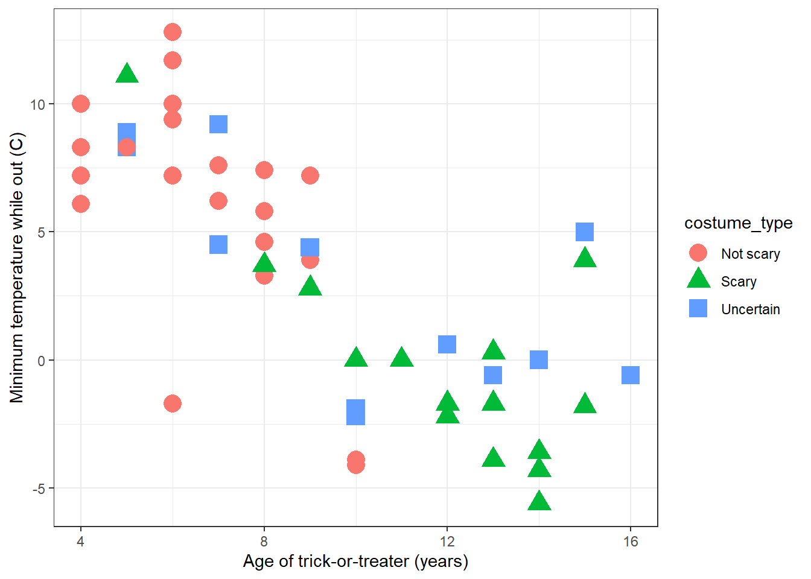
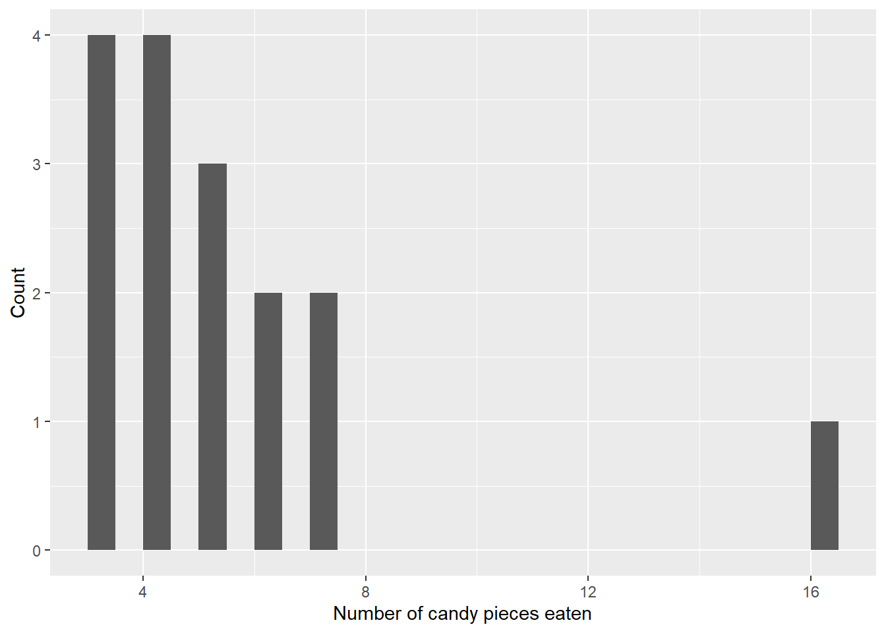

##Hello Professor! This is where the issue I was having is. I have attempted to replace all of the misspelled/miscapitalized "witch" but none of them are replacing.#edit: I have continued working and if I use stringr afterwards it completely works and does what both are supposed to do. I don't know why this part doesn't work on its own.#Sample to show that I know how to rename individual cases via biostatistics methodlevels(Halloween$costume)
##all data is set to either capital or lowercase, if the only sample was capital I left it capital as it may have been a proper noun and was meant to be capitalized.
#use of str_to_lower() for efficiency (This would set all proper nouns to lowercase as well but would effectively fix the capitalization in this case. Code is only left here as an example. This would also allow us to change any variables which were only shown in their capitalized form without creating an NA value (such as Rabbit or Mermaid).#Halloween <- Halloween |> #mutate(costume = str_to_lower(costume))#Halloween$costume <- as.factor(Halloween$costume)#levels(Halloween$costume)
I know we haven’t learned stringr yet but it seemed like a somewhat effective to way to accomplish a lot of the work that I had to do in this section, especially for the sugar_high dataset.
##These are capitalized to match with Uncertain and to match with the plots.
Create a scatter plot of min_temp_trick vs age
ggplot(data = Halloween, aes(x = age, y = min_temp_trick_treat_C, shape = costume_type, colour = costume_type)) +geom_point(size =5) +xlab('Age of trick-or-treater (years)') +ylab('Minimum temperature while out (C)') +theme_bw()

##Figure 1. Minimum temperature that kids will trick-or-treat before going home as a function of each child's age and costume type.
Isolate the data for children who are 10 years old or older and who consumed 100 or more grams of halloween candy. Use the resulting data to plot a histogram showing the count of the number of kids who each ate certain numbers of pieces of candy.
Halloween_plot8 <- Halloween |>filter(age >=10& candy_consumed_g >=100) |>group_by(candy_pieces) |>summarise(Count =length(candy_pieces))ggplot(data = Halloween_plot8, aes(x = candy_pieces, y = Count)) +geom_col(width =0.5, just =0) +xlab('Number of candy pieces eaten')

##Figure 2. Count of number of children (age 10 and older who consuemd at least 100 grams of candy) eating different numbers of pieces of candy.
##Figure 3. Box and whisker plot showing the amount of candy consumed by children wearing different types of Halloween cosume spearated according to whether the child experienced a resulting sugar high ("no" vs "yes")
Commit changes and submit a pull request.
My costume will probably not be scary (in past years I was Link from the Legends of Zelda, a Giraffe, and a Skier) although I will almost certainly get a sugar high.